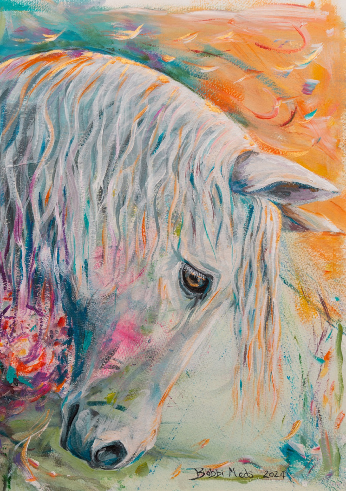
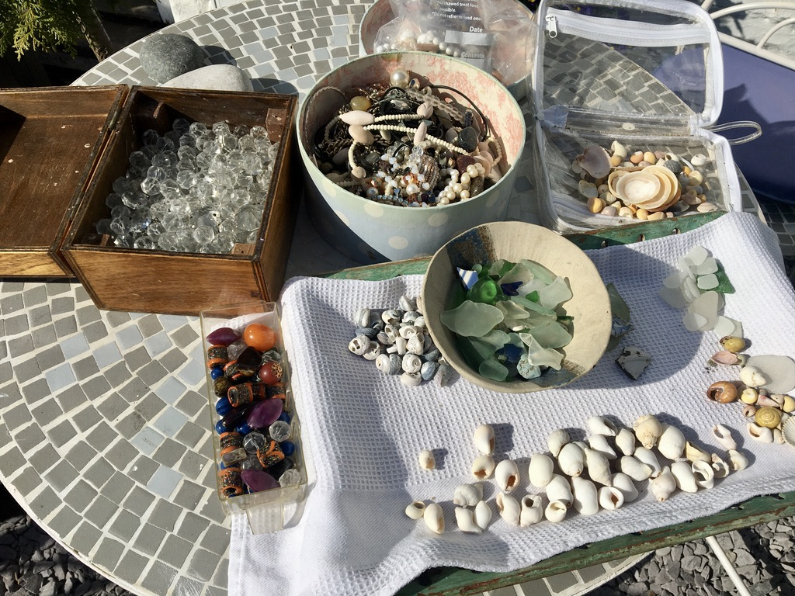
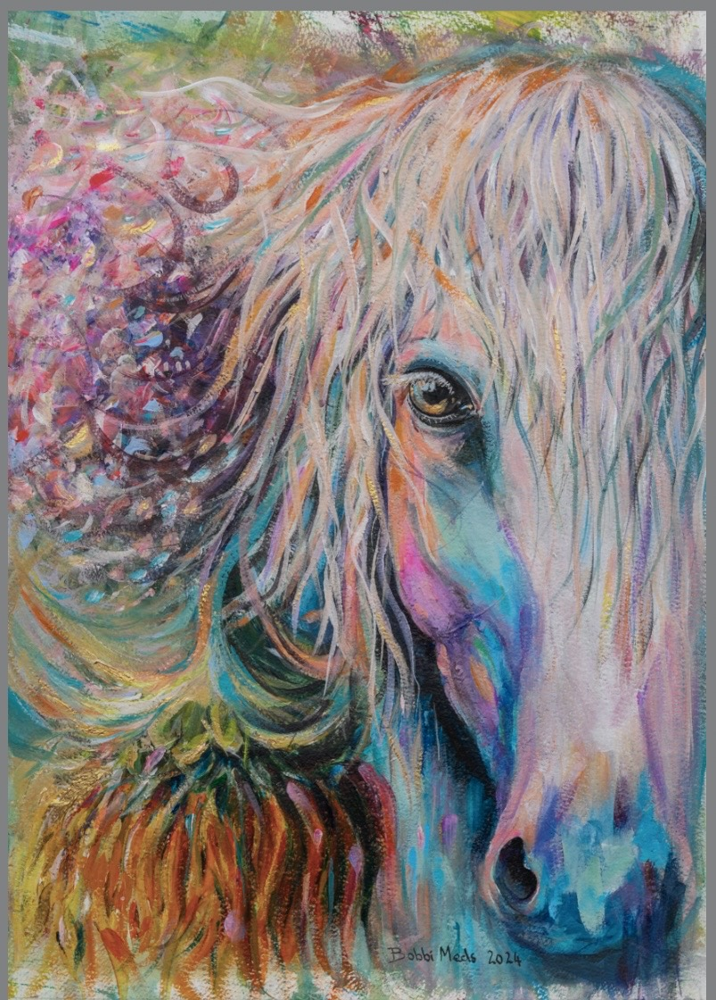
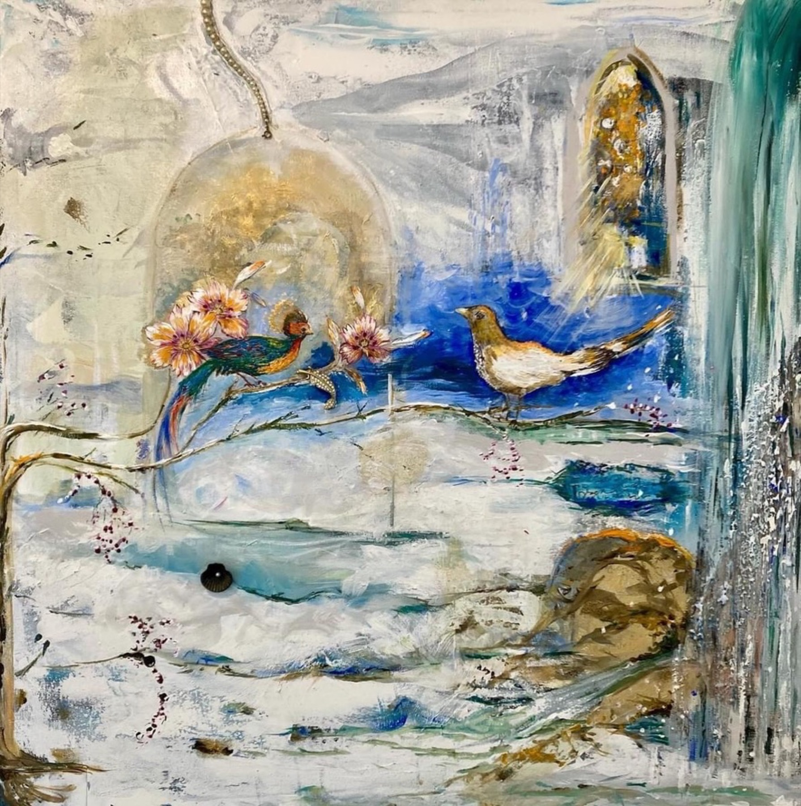
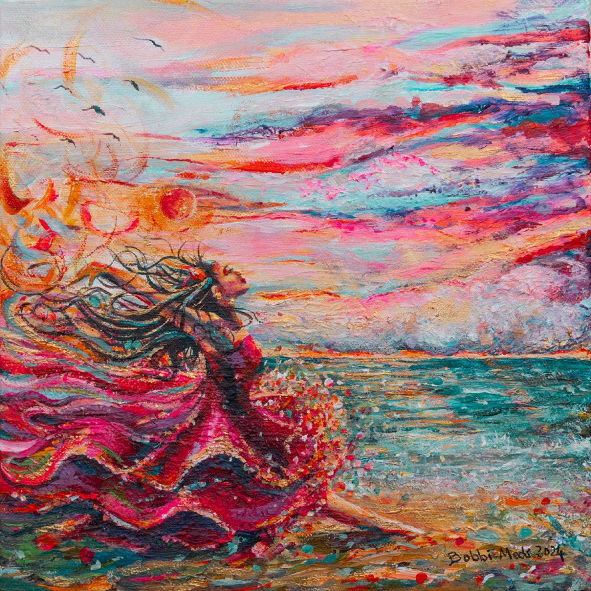
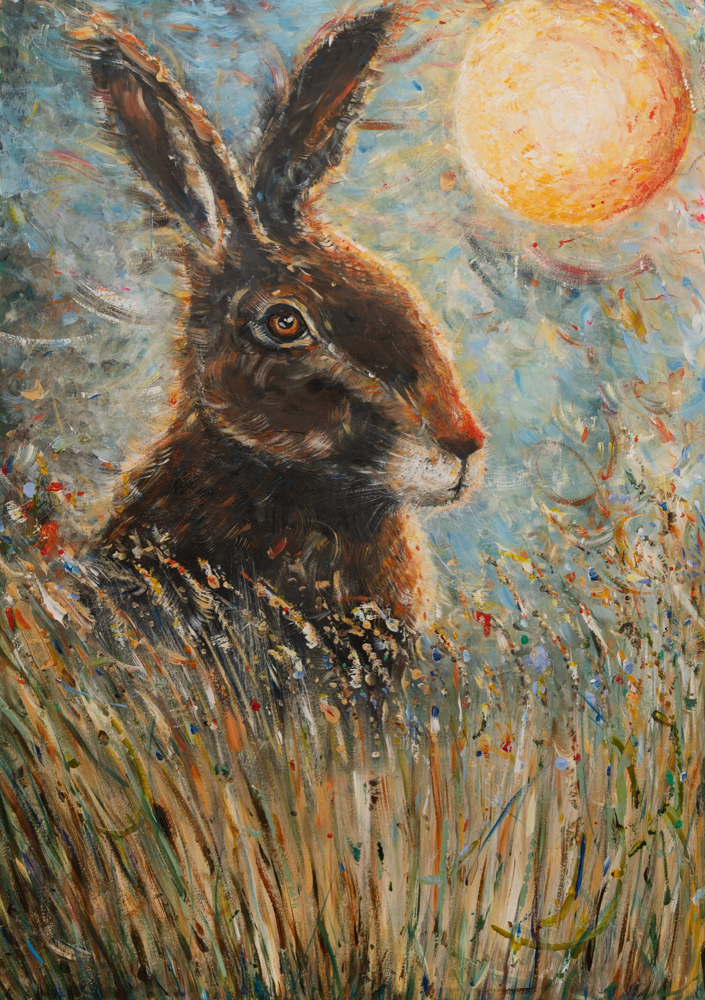
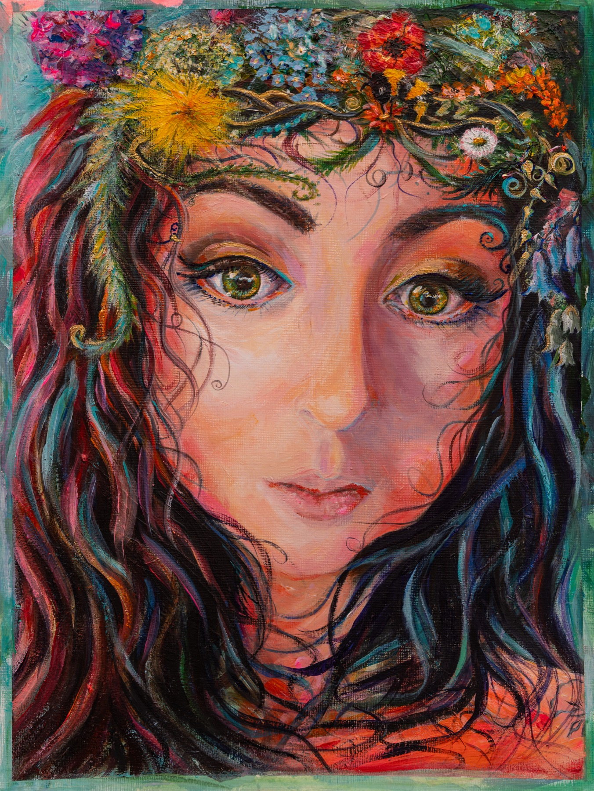

Recent art · exhibitions · originals · prints
Original Artwork
Paintings and mixed-media works made from colour, instinct, texture, story and the wild little pulse of being alive.
From the exhibition wall
Recent paintings with colour, creature and soul
This page gathers Bobbi’s recent exhibition work, original paintings and future print releases in one place.
The work sits beside Sacred Scraps, but has its own rhythm: animals, figures, fragments of landscape, weather, folklore, memory and feeling, held in acrylic and mixed-media surfaces.
Original availability, exact titles, sizes and print formats can be added as each piece is prepared for sale.
Studio materials
Found colour, texture and small treasures
Before a piece settles into itself, the studio table often becomes a gathering place.
Shells, sea glass, beads, broken jewellery, crystal stones and other found objects sit beside paint and paper as part of Bobbi’s mixed-media vocabulary. Some fragments become texture, some become symbols and some simply wait until the right artwork calls them in.
This way of working keeps the original pieces connected to place, memory and instinct: the small things collected, sorted and noticed before they become part of a larger story.

Recent exhibition work
Originals and print enquiries
These works are shown with working labels for now. Replace the labels, sizes, prices and availability notes when the final exhibition details are ready.






Interested in a piece?
Ask about originals, exhibitions or prints
For availability, commissions, exhibition enquiries or future print releases, send a note and Bobbi can respond personally.